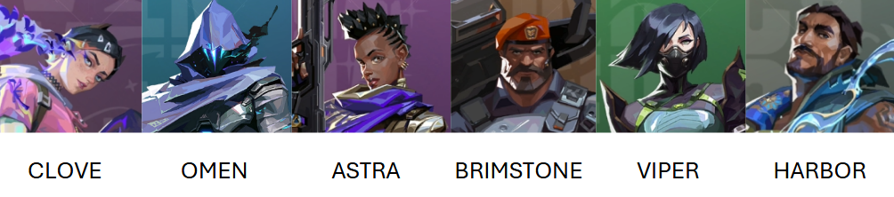
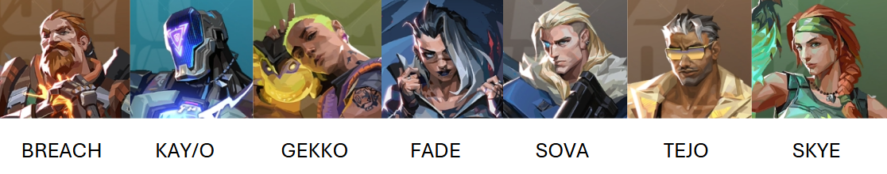
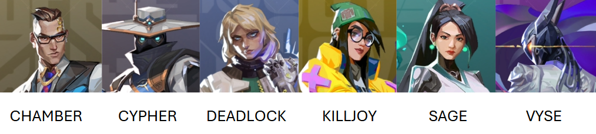

AGENTES
Duelistas
A função de duelista é focada em agentes que possuem habilidades ofensivas. Eles são responsáveis por abrir caminho para a equipe e causam danos em grandes áreas e mais agressivos.

Controladores
Os controladores têm a função de controlar áreas do mapa, bloquear a visão inimiga e criar oportunidades estratégicas para a equipe. Eles são essenciais para dividir o campo de batalha e permitir que o time avance com mais segurança ou defenda melhor um local.

Iniciadores
Os Iniciadores são agentes especializados em criar oportunidades para a equipe avançar, limpando ângulos perigosos e desestabilizando os adversários.

Sentinelas
Os sentinelas são os especialistas em defesa e controle de território. Eles têm a função de proteger bombsites, cortar flancos e dificultar a movimentação inimiga, sendo essenciais tanto para segurar avanços quanto para garantir segurança após plantar a Spike.
